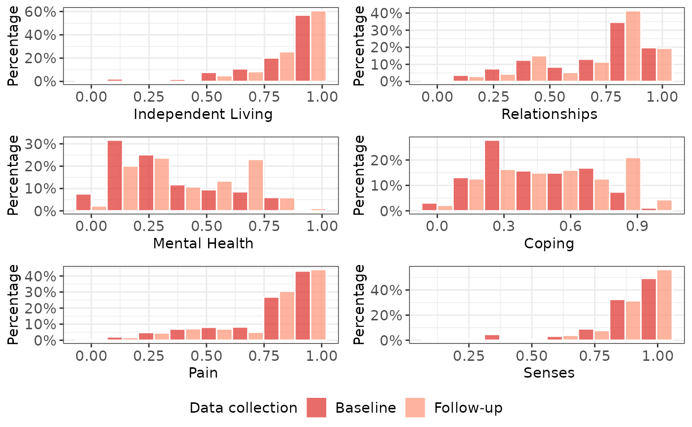

Change is coming!
The TTU package is undergoing significant redevelopment currently. As a result the syntax will soon look very different to that outlined in the current (deprecated) vignettes.
More updates will appear here shortly.
A <- Ready4useDyad(ds_tb = Ready4useRepos(dv_nm_1L_chr = "fakes",
dv_ds_nm_1L_chr = "https://doi.org/10.7910/DVN/HJXYKQ",
dv_server_1L_chr = "dataverse.harvard.edu") %>%
ingest(fls_to_ingest_chr = c("ymh_clinical_tb"),
metadata_1L_lgl = F) %>%
youthvars::transform_raw_ds_for_analysis(),
dictionary_r3 = Ready4useRepos(dv_nm_1L_chr = "TTU",
dv_ds_nm_1L_chr = "https://doi.org/10.7910/DVN/DKDIB0",
dv_server_1L_chr = "dataverse.harvard.edu") %>%
ingest(fls_to_ingest_chr = c("dictionary_r3"),
metadata_1L_lgl = F)) %>%
renew(type_1L_chr = "label")
A <- YouthvarsSeries(a_Ready4useDyad = A,
id_var_nm_1L_chr = "fkClientID",
timepoint_var_nm_1L_chr = "round",
timepoint_vals_chr = levels(procureSlot(A,
"ds_tb")$round))
A <- TTUProject(a_ScorzProfile = ScorzAqol6Adol(a_YouthvarsProfile = A))
A <- renewSlot(A, "a_ScorzProfile")## Joining, by = c("fkClientID", "match_var_chr")
A <- renewSlot(A, "b_SpecificParameters", SpecificConverter(a_ScorzProfile = A@a_ScorzProfile) %>%
metamorphose() %>%
procureSlot("b_SpecificParameters"))
A <- renewSlot(A, "b_SpecificParameters@predictors_lup", Ready4useRepos(dv_nm_1L_chr = "TTU",
dv_ds_nm_1L_chr = "https://doi.org/10.7910/DVN/DKDIB0",
dv_server_1L_chr = "dataverse.harvard.edu") %>%
ingest(fls_to_ingest_chr = c("predictors_r3"),
metadata_1L_lgl = F))
exhibitSlot(A, "b_SpecificParameters@predictors_lup")| Variable | Description | Minimum | Maximum | Class | Increment | Function | Scaling | Covariate |
|---|---|---|---|---|---|---|---|---|
| BADS | BADS total score | 0 | 150 | integer | 1 | youthvars::youthvars_bads | 0.01 | FALSE |
| GAD7 | GAD7 total score | 0 | 21 | integer | 1 | youthvars::youthvars_gad7 | 0.01 | FALSE |
| K6 | K6 total score | 0 | 24 | integer | 1 | youthvars::youthvars_k6 | 0.01 | FALSE |
| OASIS | OASIS total score | 0 | 20 | integer | 1 | youthvars::youthvars_oasis | 0.01 | FALSE |
| PHQ9 | PHQ9 total score | 0 | 27 | integer | 1 | youthvars::youthvars_phq9 | 0.01 | FALSE |
| SCARED | SCARED total score | 0 | 82 | integer | 1 | youthvars::youthvars_scared | 0.01 | FALSE |
| SOFAS | SOFAS total score | 0 | 100 | integer | 1 | youthvars::youthvars_sofas | 0.01 | TRUE |
A <- renewSlot(A, "b_SpecificParameters@depnt_var_min_max_dbl", c(0.03,1)) %>% # Inherit From TTUAqolAdol
renewSlot("b_SpecificParameters@candidate_predrs_chr", c("BADS","GAD7", "K6", "OASIS", "PHQ9", "SCARED")) %>%
renewSlot("b_SpecificParameters@candidate_covars_chr", c("d_sex_birth_s", "d_age", "d_sexual_ori_s",
"d_studying_working", "c_p_diag_s", "c_clinical_staging_s",
"SOFAS")) %>%
renewSlot("b_SpecificParameters@descv_var_nms_chr", c("d_age","Gender","d_relation_s", "d_sexual_ori_s",
"Region", "d_studying_working", "c_p_diag_s",
"c_clinical_staging_s","SOFAS")) %>%
renewSlot("b_SpecificParameters@msrmnt_date_var_nm_1L_chr", "d_interview_date")
A <- renewSlot(A, "b_SpecificParameters@fake_1L_lgl", T)
A <- renewSlot(A, "c_SpecificProject", SpecificModels(a_YouthvarsProfile = A@a_ScorzProfile@a_YouthvarsProfile,
b_SpecificParameters = A@b_SpecificParameters,
paths_chr = tempdir()))
A <- ratifySlot(A, "c_SpecificProject")
A <- renewSlot(A, "c_SpecificProject",
authorSlot(A, "c_SpecificProject", what_1L_chr = "workspace"))Generate descriptive statistics
We now generate tables and charts that describe our dataset. These are saved in a sub-directory of our output data directory.
A <- renewSlot(A, "c_SpecificProject",
authorSlot(A, "c_SpecificProject", what_1L_chr = "descriptives",
digits_1L_int = 3L))
Undertake exploratory modelling using baseline dataset
Identify preferred model types
We next compare the performance of different model types. This step saves model objects and plots to a sub-directory of our output directory and outputs a SpecificPredictors object.
A <- renewSlot(A, "c_SpecificProject",
investigateSlot(A, "c_SpecificProject",
depnt_var_max_val_1L_dbl = 0.99,# Parent method argument
session_ls = sessionInfo()))After inspecting the output of the previous command, we can now specify the preferred model types to use from this point onwards.
A <- renewSlot(A, "c_SpecificProject",
renew(procureSlot(A, "c_SpecificProject"),
new_val_xx = c("GLM_GSN_LOG", "OLS_CLL"),
type_1L_chr = "results",
what_1L_chr = "prefd_mdls"))Identify preferred predictors and covariates
Next we assess multiple versions of our preferred model type - one single predictor model for each of our candidate predictors and the same models with candidate covariates added. The output is a SpecificFixed object, plus a number of model/plot objects saved locally.
A <- renewSlot(A, "c_SpecificProject",
investigateSlot(A,"c_SpecificProject"))Assess performance of final model specification
After reviewing the output of the previous step, we specify the covariates we wish to add to the models.
A <- renewSlot(A, "c_SpecificProject",
renew(procureSlot(A, "c_SpecificProject"),
new_val_xx = "SOFAS",
type_1L_chr = "results",
what_1L_chr = "prefd_covars"))We now assess the multivariate models. The output is a SpecificMixed object and more locally saved model/plot objects.
A <- renewSlot(A, "c_SpecificProject",
investigateSlot(A, "c_SpecificProject"))Undertake longitudinal modelling
We next reformulate the models we finalised in the previous step so that they are suitable for modelling longitudinal change.
Primary analysis
For our primary analysis, we use the longitudinal formulation of the models we previously selected. As with previous steps the output of this analysis is stored in the F1 object and in files written to the local output data directory.
A <- renewSlot(A, "c_SpecificProject",
investigateSlot(A, "c_SpecificProject"))Secondary analyses
For our secondary analyses, we specify alternative combinations of predictors and covariates.
A <- renewSlot(A, "c_SpecificProject",
investigateSlot(A, "c_SpecificProject",
scndry_anlys_params_ls = make_scndry_anlys_params(candidate_predrs_chr = c("SOFAS"),
candidate_covar_nms_chr = c("d_sex_birth_s",
"d_age",
"d_sexual_ori_s",
"d_studying_working"),
prefd_covars_chr = NA_character_) %>%
make_scndry_anlys_params(candidate_predrs_chr = c("SCARED","OASIS","GAD7"),
candidate_covar_nms_chr = c("PHQ9", "SOFAS",
"d_sex_birth_s",
"d_age",
"d_sexual_ori_s",
"d_studying_working"),
prefd_covars_chr = "PHQ9")))Report and disseminate findings
Create shareable models
The model objects created and saved in our working directory by the preceding steps are not suitable for public dissemination. They are both too large in file size and, more importantly, include copies of our source dataset. We can overcome these limitations by creating shareable versions of the models. Two types of shareable version are created - copies of the original model objects in which fake data overwrites the original source data and tables of model coefficients.
A <- renewSlot(A, "c_SpecificProject",
authorData(procureSlot(A, "c_SpecificProject")))Specify study reporting metadata
We create a TTUSynopsis object that contains the fields necessary to render and share reports.
A <- renewSlot(A, "d_TTUReports",
{
Y <- metamorphoseSlot(A, "c_SpecificProject")
Y <- TTUSynopsis(a_Ready4showPaths = Y@a_Ready4showPaths,
b_SpecificResults = Y@b_SpecificResults,
c_SpecificParameters = Y@c_SpecificParameters,
d_YouthvarsProfile = Y@d_YouthvarsProfile,
rmd_fl_nms_ls = Y@rmd_fl_nms_ls)
Y <- TTUReports(a_TTUSynopsis = Y)
Y
}
)We add metadata relevant to the reports that we will be generating to these fields.
A <- renewSlot(A, "d_TTUReports@a_TTUSynopsis",
procureSlot(A, "d_TTUReports@a_TTUSynopsis") %>%
renewSlot("authors_r3", ready4show::authors_tb) %>%
renewSlot("institutes_r3", ready4show::institutes_tb) %>%
renewSlot("digits_int", c(3L,3L)) %>%
renewSlot("outp_formats_chr", c("PDF","PDF")) %>%
renewSlot("title_1L_chr", "A hypothetical utility mapping study using fake data") %>%
renewSlot("correspondences_r3", old_nms_chr = c("PHQ9", "GAD7"), new_nms_chr = c("PHQ-9", "GAD-7")) %>%
renewSlot("e_Ready4useRepos", Ready4useRepos(dv_nm_1L_chr = "fakes",
dv_ds_nm_1L_chr = "https://doi.org/10.7910/DVN/D74QMP",
dv_server_1L_chr = "dataverse.harvard.edu"))) Author model catalogues
We download a program for generating a catalogue of models and use it to summarising the models created under each study analysis (one primary and two secondary). The catalogues are saved locally.
authorSlot(A, "d_TTUReports", what_1L_chr = "Catalogue", download_tmpl_1L_lgl = T)Share model catalogue
We share the catalogues that we created, uploading a copy to our study online repository. To run this step you will need write permissions to the online repository.
shareSlot(A, "d_TTUReports@a_TTUSynopsis", type_1L_chr = "Report", what_1L_chr = "Catalogue") # Outputs dfShare models
We share tables of coefficients and other meta-data about the models we have created by posting them to the online repository. The object we create and share is designed to be used in conjunction with the youthu package to make it easier to make predictions with these models using new data. Again, you will need write permissions to the online repository.
shareSlot(A, "d_TTUReports@a_TTUSynopsis", type_1L_chr = "Models", what_1L_chr = "ingredients")Author manuscript
We add some content about the manuscript we wish to author.
A <- renewSlot(A, "d_TTUReports@a_TTUSynopsis",
procureSlot(A, "d_TTUReports@a_TTUSynopsis") %>%
renewSlot("background_1L_chr", "Quality Adjusted Life Years (QALYs) are often used in economic evaluations, yet utility weights for deriving them are rarely directly measured in mental health services.") %>%
renewSlot("coi_1L_chr", "None declared") %>%
renewSlot("conclusion_1L_chr","Nothing should be concluded from this study as it is purely hypothetical.") %>%
renewSlot("ethics_1L_chr", "The study was reviewed and granted approval by no-one." ) %>%
renewSlot("funding_1L_chr", "The study was funded by no-one.") %>%
renewSlot("interval_chr", "three months") %>%
renewSlot("keywords_chr", c("anxiety", "AQoL","depression", "psychological distress", "QALYs", "utility mapping")) %>%
renewSlot("sample_desc_1L_chr", "The study sample is fake data.") )We create a summary of results that can be interpreted by the program that authors the manuscript.
A <- renewSlot(A, "d_TTUReports@a_TTUSynopsis@abstract_args_ls",
manufactureSlot(A,"d_TTUReports@a_TTUSynopsis", what_1L_chr = "abstract_args_ls",
depnt_var_nms_chr = c("AQoL-6D", "Adolescent AQoL Six Dimension"))) # port to parent manufacture method
A <- enhanceSlot(A, "d_TTUReports@a_TTUSynopsis", with_1L_chr = "results_ls",
depnt_var_nms_chr = c("AQoL-6D", "Adolescent AQoL Six Dimension")#,version_1L_chr = A@d_TTUReports@manuscript_tmpl_chr[2]
) # Should be derived from scorz classWe create and save the plots that will be used in the manuscript.
authorSlot(A, "d_TTUReports", type_1L_chr = "Plots",
depnt_var_desc_1L_chr = A@d_TTUReports@a_TTUSynopsis@b_SpecificResults@a_SpecificShareable@shareable_outp_ls$results_ls$study_descs_ls$health_utl_nm_1L_chr)
#timepoint_new_nms_chr = c("Baseline","Follow-up"), # necessary?We download a program for generating a template manuscript and run it to author a first draft of the manuscript.
authorSlot(A, "d_TTUReports", type_1L_chr = "Report", what_1L_chr = "Manuscript_Auto", download_tmpl_1L_lgl = T)We can copy the RMarkdown files that created the template manuscript to a new director (which we call “Manuscript_Submission”) so that we can then manually edit those files to produce a manuscript that we can submit for publication. Note that in this example we have not made any edits to the template manuscript.
R.utils::copyDirectory(paste0(A@d_TTUReports@a_TTUSynopsis@a_Ready4showPaths@outp_data_dir_1L_chr,
"/",
A@d_TTUReports@a_TTUSynopsis@a_Ready4showPaths@mkdn_data_dir_1L_chr,
"/Manuscript_Auto"),
paste0(A@d_TTUReports@a_TTUSynopsis@a_Ready4showPaths@outp_data_dir_1L_chr,
"/",
A@d_TTUReports@a_TTUSynopsis@a_Ready4showPaths@mkdn_data_dir_1L_chr,
"/Manuscript_Submission"))Once any edits to the RMarkdown files for creating the submission manuscript have been finalised, we can run the following command to author the manuscript. The below commands will generate a Microsoft Word format manuscript and a PDF technical appendix. Unlike the template manuscript, the figures and tables are positioned after (and not within) the main body of the manuscript. Note that the Word version of the manuscript generated by these commands will require some minor formatting edits (principally to the display of tables and numbering of sections).
A <- renewSlot(A, "d_TTUReports",
procureSlot(A, "d_TTUReports") %>%
renewSlot("a_TTUSynopsis@tables_in_body_lgl", F) %>%
renewSlot("a_TTUSynopsis@figures_in_body_lgl", F) %>%
renewSlot("a_TTUSynopsis@outp_formats_chr", c("Word","PDF")))
authorSlot(A, "d_TTUReports", what_1L_chr = "Manuscript_Submission", download_tmpl_1L_lgl = F)Tidy workspace
The preceding steps saved multiple objects (mostly R model objects) that have embedded within them copies of the source dataset. We can now purge all such copies from our output data directory.
author(procureSlot(A,"c_SpecificProject"),
type_1L_chr = "purge_write")